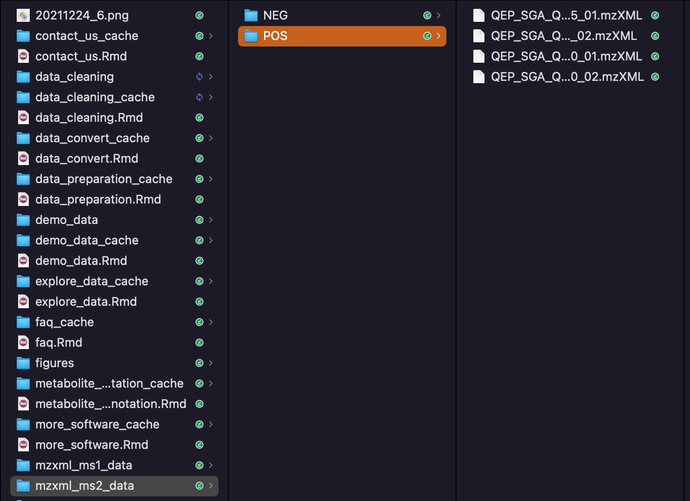
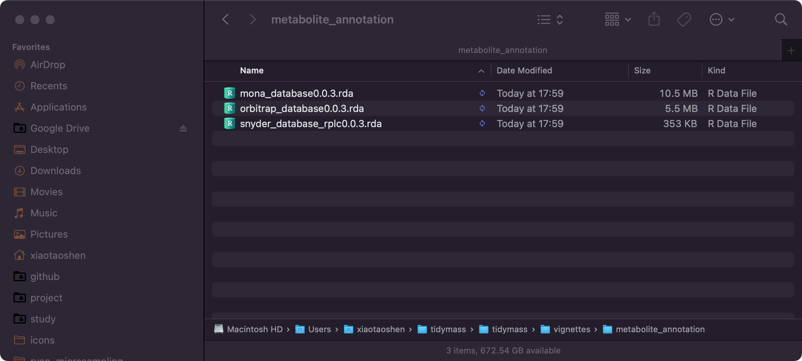
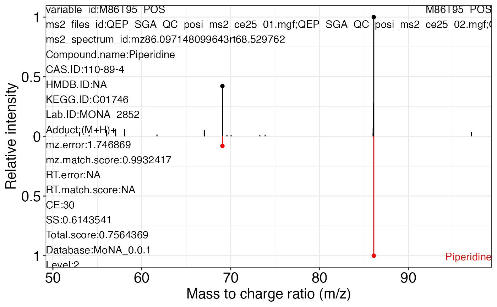
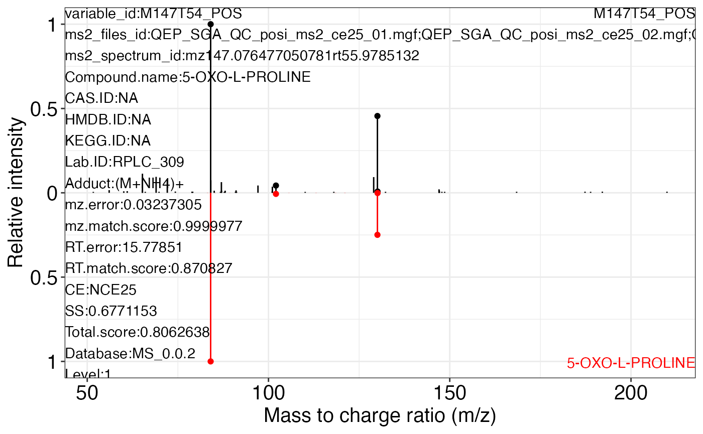
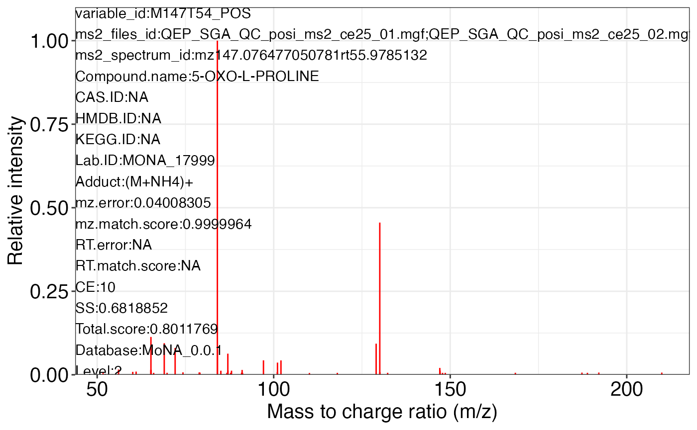
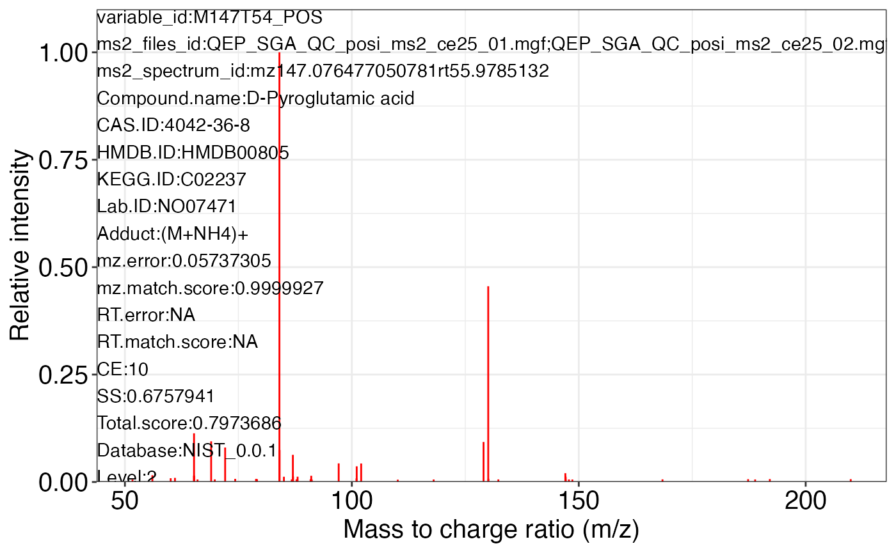

Metabolite annotation
Xiaotao Shen (https://www.shenxt.info/)
Created on 2021-12-04 and updated on 2022-03-08
metabolite_annotation.RmdData preparation
We just use the dataset which are from previous step.
Add MS2 spectra data to mass_dataset class
Download the MS2 data here.
Uncompress it.

Positive mode
object_pos2 <-
mutate_ms2(
object = object_pos2,
column = "rp",
polarity = "positive",
ms1.ms2.match.mz.tol = 15,
ms1.ms2.match.rt.tol = 30,
path = "mgf_ms2_data/POS"
)
#> Reading mgf data...
#>
#> Reading mgf data...
#>
#> Reading mgf data...
#>
#> Reading mgf data...
#>
#> 1042 out of 5101 variable have MS2 spectra.
#>
#> Selecting the most intense MS2 spectrum for each peak...
object_pos2
#> --------------------
#> massdataset version: 0.99.1
#> --------------------
#> 1.expression_data:[ 5101 x 259 data.frame]
#> 2.sample_info:[ 259 x 6 data.frame]
#> 3.variable_info:[ 5101 x 6 data.frame]
#> 4.sample_info_note:[ 6 x 2 data.frame]
#> 5.variable_info_note:[ 6 x 2 data.frame]
#> 6.ms2_data:[ 1042 variables x 951 MS2 spectra]
#> --------------------
#> Processing information (extract_process_info())
#> create_mass_dataset ----------
#> Package Function.used Time
#> 1 massdataset create_mass_dataset() 2022-01-16 16:19:04
#> process_data ----------
#> Package Function.used Time
#> 1 massprocesser process_data 2022-01-16 16:18:43
#> mutate ----------
#> Package Function.used Time
#> 1 massdataset mutate() 2022-01-16 23:48:08
#> mutate_variable_na_freq ----------
#> Package Function.used Time
#> 1 massdataset mutate_variable_na_freq() 2022-01-18 09:11:43
#> 2 massdataset mutate_variable_na_freq() 2022-01-18 09:11:43
#> 3 massdataset mutate_variable_na_freq() 2022-01-18 09:11:43
#> filter ----------
#> Package Function.used Time
#> 1 massdataset filter() 2022-01-18 09:11:44
#> impute_mv ----------
#> Package Function.used Time
#> 1 masscleaner impute_mv() 2022-01-18 09:38:02
#> normalize_data ----------
#> Package Function.used Time
#> 1 masscleaner normalize_data() 2022-01-18 09:38:07
#> integrate_data ----------
#> Package Function.used Time
#> 1 masscleaner integrate_data() 2022-01-18 09:38:08
#> update_mass_dataset ----------
#> Package Function.used Time
#> 1 massdataset update_mass_dataset() 2022-01-19 21:53:01
#> mutate_ms2 ----------
#> Package Function.used Time
#> 1 massdataset mutate_ms2() 2022-01-19 21:53:36
extract_ms2_data(object_pos2)
#> $`QEP_SGA_QC_posi_ms2_ce25_01.mgf;QEP_SGA_QC_posi_ms2_ce25_02.mgf;QEP_SGA_QC_posi_ms2_ce50_01.mgf;QEP_SGA_QC_posi_ms2_ce50_02.mgf`
#> --------------------
#> column: rp
#> polarity: positive
#> mz_tol: 15
#> rt_tol (second): 30
#> --------------------
#> 1042 variables:
#> M71T775_POS M72T53_POS M83T50_POS M84T57_POS M85T54_POS...
#> 951 MS2 spectra.
#> mz70.981170654297rt775.4286 mz72.081642150879rt53.6528862 mz82.945625305176rt49.238013 mz84.045127868652rt59.6895132 mz85.029016959043rt53.0835648...
#> Negative mode
object_neg2 <-
mutate_ms2(
object = object_neg2,
column = "rp",
polarity = "negative",
ms1.ms2.match.mz.tol = 15,
ms1.ms2.match.rt.tol = 30,
path = "mgf_ms2_data/NEG"
)
#> Reading mgf data...
#>
#> Reading mgf data...
#>
#> Reading mgf data...
#>
#> Reading mgf data...
#>
#> 1092 out of 4104 variable have MS2 spectra.
#>
#> Selecting the most intense MS2 spectrum for each peak...
object_neg2
#> --------------------
#> massdataset version: 0.99.1
#> --------------------
#> 1.expression_data:[ 4104 x 259 data.frame]
#> 2.sample_info:[ 259 x 6 data.frame]
#> 3.variable_info:[ 4104 x 6 data.frame]
#> 4.sample_info_note:[ 6 x 2 data.frame]
#> 5.variable_info_note:[ 6 x 2 data.frame]
#> 6.ms2_data:[ 1092 variables x 988 MS2 spectra]
#> --------------------
#> Processing information (extract_process_info())
#> create_mass_dataset ----------
#> Package Function.used Time
#> 1 massdataset create_mass_dataset() 2022-01-16 16:20:02
#> process_data ----------
#> Package Function.used Time
#> 1 massprocesser process_data 2022-01-16 16:19:48
#> mutate ----------
#> Package Function.used Time
#> 1 massdataset mutate() 2022-01-16 23:48:08
#> mutate_variable_na_freq ----------
#> Package Function.used Time
#> 1 massdataset mutate_variable_na_freq() 2022-01-18 09:11:47
#> 2 massdataset mutate_variable_na_freq() 2022-01-18 09:11:47
#> 3 massdataset mutate_variable_na_freq() 2022-01-18 09:11:47
#> filter ----------
#> Package Function.used Time
#> 1 massdataset filter() 2022-01-18 09:11:47
#> impute_mv ----------
#> Package Function.used Time
#> 1 masscleaner impute_mv() 2022-01-18 09:38:06
#> normalize_data ----------
#> Package Function.used Time
#> 1 masscleaner normalize_data() 2022-01-18 09:50:47
#> integrate_data ----------
#> Package Function.used Time
#> 1 masscleaner integrate_data() 2022-01-18 09:50:47
#> update_mass_dataset ----------
#> Package Function.used Time
#> 1 massdataset update_mass_dataset() 2022-01-19 21:53:37
#> mutate_ms2 ----------
#> Package Function.used Time
#> 1 massdataset mutate_ms2() 2022-01-19 21:54:06
extract_ms2_data(object_neg2)
#> $`QEP_SGA_QC_neg_ms2_ce25_01.mgf;QEP_SGA_QC_neg_ms2_ce25_02.mgf;QEP_SGA_QC_neg_ms2_ce50_01.mgf;QEP_SGA_QC_neg_ms2_ce50_02.mgf`
#> --------------------
#> column: rp
#> polarity: negative
#> mz_tol: 15
#> rt_tol (second): 30
#> --------------------
#> 1092 variables:
#> M71T51_NEG M73T74_NEG M75T52_NEG M80T299_NEG M80T232_NEG...
#> 988 MS2 spectra.
#> mz71.012359619141rt52.3270968 mz73.02799987793rt74.779476 mz75.007308959961rt24.1557228 mz79.955728954783rt301.268466 mz79.955834350356rt235.127328...
#> Metabolite annotation
Metabolite annotation is based on the metid package.
Download database
We need to download MS2 database from metid website.
Here we download the Michael Snyder RPLC databases, Orbitrap database and MoNA database. And place them in a new folder named as metabolite_annotation.

Positive mode
Annotate features using snyder_database_rplc0.0.3.
load("metabolite_annotation/snyder_database_rplc0.0.3.rda")
snyder_database_rplc0.0.3
#> -----------Base information------------
#> Version: 0.0.2
#> Source: MS
#> Link: http://snyderlab.stanford.edu/
#> Creater: Xiaotao Shen ( shenxt1990@163.com )
#> With RT information
#> -----------Spectral information------------
#> There are 14 items of metabolites in database:
#> Lab.ID; Compound.name; mz; RT; CAS.ID; HMDB.ID; KEGG.ID; Formula; mz.pos; mz.neg; Submitter; Family; Sub.pathway; Note
#> There are 833 metabolites in total
#> There are 356 metabolites in positive mode with MS2 spectra.
#> There are 534 metabolites in negative mode with MS2 spectra.
#> Collision energy in positive mode (number:):
#> Total number: 2
#> NCE25; NCE50
#> Collision energy in negative mode:
#> Total number: 2
#> NCE25; NCE50
#>
object_pos2 <-
annotate_metabolites_mass_dataset(object = object_pos2,
ms1.match.ppm = 15,
rt.match.tol = 30,
polarity = "positive",
database = snyder_database_rplc0.0.3)Annotate features using orbitrap_database0.0.3.
load("metabolite_annotation/orbitrap_database0.0.3.rda")
orbitrap_database0.0.3
#> -----------Base information------------
#> Version: 0.0.1
#> Source: NIST
#> Link: https://www.nist.gov/
#> Creater: Xiaotao Shen ( shenxt1990@163.com )
#> Without RT informtaion
#> -----------Spectral information------------
#> There are 8 items of metabolites in database:
#> Lab.ID; Compound.name; mz; RT; CAS.ID; HMDB.ID; KEGG.ID; Formula
#> There are 8360 metabolites in total
#> There are 7103 metabolites in positive mode with MS2 spectra.
#> There are 3311 metabolites in negative mode with MS2 spectra.
#> Collision energy in positive mode (number:):
#> Total number: 12
#> 10; 15; 45; 55; 5; 20; 30; 35; 40; 25
#> Collision energy in negative mode:
#> Total number: 12
#> 10; 25; 5; 15; 20; 30; 50; 35; 40; 45
#>
object_pos2 <-
annotate_metabolites_mass_dataset(object = object_pos2,
ms1.match.ppm = 15,
polarity = "positive",
database = orbitrap_database0.0.3)Annotate features using mona_database0.0.3.
load("metabolite_annotation/mona_database0.0.3.rda")
orbitrap_database0.0.3
#> -----------Base information------------
#> Version: 0.0.1
#> Source: NIST
#> Link: https://www.nist.gov/
#> Creater: Xiaotao Shen ( shenxt1990@163.com )
#> Without RT informtaion
#> -----------Spectral information------------
#> There are 8 items of metabolites in database:
#> Lab.ID; Compound.name; mz; RT; CAS.ID; HMDB.ID; KEGG.ID; Formula
#> There are 8360 metabolites in total
#> There are 7103 metabolites in positive mode with MS2 spectra.
#> There are 3311 metabolites in negative mode with MS2 spectra.
#> Collision energy in positive mode (number:):
#> Total number: 12
#> 10; 15; 45; 55; 5; 20; 30; 35; 40; 25
#> Collision energy in negative mode:
#> Total number: 12
#> 10; 25; 5; 15; 20; 30; 50; 35; 40; 45
#>
object_pos2 <-
annotate_metabolites_mass_dataset(object = object_pos2,
ms1.match.ppm = 15,
polarity = "positive",
database = mona_database0.0.3)Negative mode
Annotate features using snyder_database_rplc0.0.3.
object_neg2 <-
annotate_metabolites_mass_dataset(object = object_neg2,
ms1.match.ppm = 15,
rt.match.tol = 30,
polarity = "negative",
database = snyder_database_rplc0.0.3)Annotation result
The annotation result will assign into mass_dataset class as the annotation_table slot.
head(extract_annotation_table(object = object_pos2))
#> variable_id
#> 1 M100T160_POS
#> 2 M103T100_POS
#> 3 M103T100_POS
#> 4 M104T51_POS
#> 5 M113T187_POS
#> 6 M113T81_POS
#> ms2_files_id
#> 1 QEP_SGA_QC_posi_ms2_ce25_01.mgf;QEP_SGA_QC_posi_ms2_ce25_02.mgf;QEP_SGA_QC_posi_ms2_ce50_01.mgf;QEP_SGA_QC_posi_ms2_ce50_02.mgf
#> 2 QEP_SGA_QC_posi_ms2_ce25_01.mgf;QEP_SGA_QC_posi_ms2_ce25_02.mgf;QEP_SGA_QC_posi_ms2_ce50_01.mgf;QEP_SGA_QC_posi_ms2_ce50_02.mgf
#> 3 QEP_SGA_QC_posi_ms2_ce25_01.mgf;QEP_SGA_QC_posi_ms2_ce25_02.mgf;QEP_SGA_QC_posi_ms2_ce50_01.mgf;QEP_SGA_QC_posi_ms2_ce50_02.mgf
#> 4 QEP_SGA_QC_posi_ms2_ce25_01.mgf;QEP_SGA_QC_posi_ms2_ce25_02.mgf;QEP_SGA_QC_posi_ms2_ce50_01.mgf;QEP_SGA_QC_posi_ms2_ce50_02.mgf
#> 5 QEP_SGA_QC_posi_ms2_ce25_01.mgf;QEP_SGA_QC_posi_ms2_ce25_02.mgf;QEP_SGA_QC_posi_ms2_ce50_01.mgf;QEP_SGA_QC_posi_ms2_ce50_02.mgf
#> 6 QEP_SGA_QC_posi_ms2_ce25_01.mgf;QEP_SGA_QC_posi_ms2_ce25_02.mgf;QEP_SGA_QC_posi_ms2_ce50_01.mgf;QEP_SGA_QC_posi_ms2_ce50_02.mgf
#> ms2_spectrum_id Compound.name CAS.ID HMDB.ID
#> 1 mz100.076248168945rt158.377638 N-Methyl-2-pyrrolidone 872-50-4 <NA>
#> 2 mz103.054814801682rt96.92601 Phenylacetaldehyde 122-78-1 HMDB06236
#> 3 mz103.054814801682rt96.92601 3-Amino-2-oxazolidinone 80-65-9 <NA>
#> 4 mz104.107467651367rt49.510314 5-Amino-1-pentanol 2508-29-4 <NA>
#> 5 mz113.060150146484rt188.406384 1,4-Cyclohexanedione <NA> <NA>
#> 6 mz113.035087585449rt77.20827 URACIL <NA> <NA>
#> KEGG.ID Lab.ID Adduct mz.error mz.match.score RT.error
#> 1 C11118 MONA_11509 (M+H)+ 1.335652 0.9960435 NA
#> 2 C00601 NO07389 (M+H-H2O)+ 1.537004 0.9947640 NA
#> 3 <NA> NO07231 (M+H)+ 11.537004 0.7439487 NA
#> 4 <NA> NO07238 (M+H)+ 1.169128 0.9969671 NA
#> 5 <NA> MONA_14519 (M+H)+ 1.051626 0.9975454 NA
#> 6 <NA> MONA_18148 (M+H)+ 1.275544 0.9963909 NA
#> RT.match.score CE SS Total.score Database Level
#> 1 NA 35 (nominal) 0.6871252 0.8029696 MoNA_0.0.1 2
#> 2 NA 10 0.5748835 0.7323387 NIST_0.0.1 2
#> 3 NA 20 0.5020256 0.5927468 NIST_0.0.1 2
#> 4 NA 5 0.5971697 0.7470937 NIST_0.0.1 2
#> 5 NA HCD (NCE 20-30-40%) 0.5401414 0.7116679 MoNA_0.0.1 2
#> 6 NA 10 0.6889885 0.8042644 MoNA_0.0.1 2
variable_info_pos <-
extract_variable_info(object = object_pos2)
head(variable_info_pos)
#> variable_id mz rt na_freq na_freq.1 na_freq.2 Compound.name
#> 1 M70T53_POS 70.06596 52.78542 0.00000000 0.14545455 0.00000000 <NA>
#> 2 M70T527_POS 70.36113 526.76657 0.02564103 0.18181818 0.30000000 <NA>
#> 3 M71T775_POS 70.98125 775.44867 0.00000000 0.00000000 0.00000000 <NA>
#> 4 M71T669_POS 70.98125 668.52844 0.00000000 0.02727273 0.01818182 <NA>
#> 5 M71T715_POS 70.98125 714.74066 0.05128205 0.12727273 0.02727273 <NA>
#> 6 M71T54_POS 71.04999 54.45641 0.15384615 0.99090909 0.05454545 <NA>
#> CAS.ID HMDB.ID KEGG.ID Lab.ID Adduct mz.error mz.match.score RT.error
#> 1 <NA> <NA> <NA> <NA> <NA> NA NA NA
#> 2 <NA> <NA> <NA> <NA> <NA> NA NA NA
#> 3 <NA> <NA> <NA> <NA> <NA> NA NA NA
#> 4 <NA> <NA> <NA> <NA> <NA> NA NA NA
#> 5 <NA> <NA> <NA> <NA> <NA> NA NA NA
#> 6 <NA> <NA> <NA> <NA> <NA> NA NA NA
#> RT.match.score CE SS Total.score Database Level
#> 1 NA <NA> NA NA <NA> NA
#> 2 NA <NA> NA NA <NA> NA
#> 3 NA <NA> NA NA <NA> NA
#> 4 NA <NA> NA NA <NA> NA
#> 5 NA <NA> NA NA <NA> NA
#> 6 NA <NA> NA NA <NA> NA
table(variable_info_pos$Level)
#>
#> 1 2
#> 23 183
table(variable_info_pos$Database)
#>
#> MoNA_0.0.1 MS_0.0.2 NIST_0.0.1
#> 78 23 105Use the ms2_plot_mass_dataset() function to get the MS2 matching plot.
ms2_plot_mass_dataset(object = object_pos2,
variable_id = "M86T95_POS",
database = mona_database0.0.3)
#> $M86T95_POS_1
#>
#> $M86T95_POS_2
#>
#> $M86T95_POS_3
ms2_plot_mass_dataset(object = object_pos2,
variable_id = "M86T95_POS",
database = mona_database0.0.3,
interactive_plot = TRUE)
#> $M86T95_POS_1
#>
#> $M86T95_POS_2
#>
#> $M86T95_POS_3
ms2_plot_mass_dataset(object = object_pos2,
variable_id = "M147T54_POS",
database = snyder_database_rplc0.0.3,
interactive_plot = FALSE)
#> database may be wrong.
#> database may be wrong.
#> $M147T54_POS_1
#>
#> $M147T54_POS_2
#>
#> $M147T54_POS_3
Save data for subsequent analysis.
Session information
sessionInfo()
#> R version 4.1.2 (2021-11-01)
#> Platform: x86_64-apple-darwin17.0 (64-bit)
#> Running under: macOS Big Sur 10.16
#>
#> Matrix products: default
#> BLAS: /Library/Frameworks/R.framework/Versions/4.1/Resources/lib/libRblas.0.dylib
#> LAPACK: /Library/Frameworks/R.framework/Versions/4.1/Resources/lib/libRlapack.dylib
#>
#> locale:
#> [1] en_US.UTF-8/en_US.UTF-8/en_US.UTF-8/C/en_US.UTF-8/en_US.UTF-8
#>
#> attached base packages:
#> [1] stats4 stats graphics grDevices utils datasets methods
#> [8] base
#>
#> other attached packages:
#> [1] tinytools_0.9.1 dplyr_1.0.8 metid_1.2.2
#> [4] metpath_0.99.2 massstat_0.99.6 ggfortify_0.4.14
#> [7] ggplot2_3.3.5 massqc_0.99.3 masscleaner_0.99.3
#> [10] xcms_3.16.1 MSnbase_2.20.4 ProtGenerics_1.26.0
#> [13] S4Vectors_0.32.3 mzR_2.28.0 Rcpp_1.0.8
#> [16] Biobase_2.54.0 BiocGenerics_0.40.0 BiocParallel_1.28.3
#> [19] massprocesser_0.99.3 magrittr_2.0.2 masstools_0.99.3
#> [22] massdataset_0.99.8 tidymass_0.99.4
#>
#> loaded via a namespace (and not attached):
#> [1] ragg_1.2.1 tidyr_1.2.0
#> [3] missForest_1.4 knitr_1.37
#> [5] DelayedArray_0.20.0 data.table_1.14.2
#> [7] rpart_4.1.16 KEGGREST_1.34.0
#> [9] RCurl_1.98-1.5 doParallel_1.0.17
#> [11] generics_0.1.2 snow_0.4-4
#> [13] leaflet_2.1.0 preprocessCore_1.56.0
#> [15] mixOmics_6.18.1 RANN_2.6.1
#> [17] proxy_0.4-26 future_1.23.0
#> [19] tzdb_0.2.0 xml2_1.3.3
#> [21] lubridate_1.8.0 ggsci_2.9
#> [23] SummarizedExperiment_1.24.0 assertthat_0.2.1
#> [25] tidyverse_1.3.1 viridis_0.6.2
#> [27] xfun_0.29 hms_1.1.1
#> [29] jquerylib_0.1.4 evaluate_0.15
#> [31] DEoptimR_1.0-10 fansi_1.0.2
#> [33] dbplyr_2.1.1 readxl_1.3.1
#> [35] igraph_1.2.11 DBI_1.1.2
#> [37] htmlwidgets_1.5.4 MsFeatures_1.3.0
#> [39] rARPACK_0.11-0 purrr_0.3.4
#> [41] ellipsis_0.3.2 RSpectra_0.16-0
#> [43] crosstalk_1.2.0 backports_1.4.1
#> [45] ggcorrplot_0.1.3 MatrixGenerics_1.6.0
#> [47] vctrs_0.3.8 remotes_2.4.2
#> [49] cachem_1.0.6 withr_2.4.3
#> [51] ggforce_0.3.3 itertools_0.1-3
#> [53] robustbase_0.93-9 checkmate_2.0.0
#> [55] cluster_2.1.2 lazyeval_0.2.2
#> [57] crayon_1.5.0 ellipse_0.4.2
#> [59] labeling_0.4.2 pkgconfig_2.0.3
#> [61] tweenr_1.0.2 GenomeInfoDb_1.30.0
#> [63] nnet_7.3-17 rlang_1.0.1
#> [65] globals_0.14.0 lifecycle_1.0.1
#> [67] affyio_1.64.0 extrafontdb_1.0
#> [69] fastDummies_1.6.3 MassSpecWavelet_1.60.0
#> [71] modelr_0.1.8 cellranger_1.1.0
#> [73] randomForest_4.7-1 rprojroot_2.0.2
#> [75] polyclip_1.10-0 matrixStats_0.61.0
#> [77] Matrix_1.4-0 reprex_2.0.1
#> [79] base64enc_0.1-3 GlobalOptions_0.1.2
#> [81] png_0.1-7 viridisLite_0.4.0
#> [83] rjson_0.2.21 clisymbols_1.2.0
#> [85] bitops_1.0-7 pander_0.6.4
#> [87] Biostrings_2.62.0 shape_1.4.6
#> [89] stringr_1.4.0 parallelly_1.30.0
#> [91] robust_0.7-0 readr_2.1.2
#> [93] jpeg_0.1-9 gridGraphics_0.5-1
#> [95] scales_1.1.1 memoise_2.0.1
#> [97] plyr_1.8.6 zlibbioc_1.40.0
#> [99] compiler_4.1.2 RColorBrewer_1.1-2
#> [101] pcaMethods_1.86.0 clue_0.3-60
#> [103] rrcov_1.6-2 cli_3.2.0
#> [105] affy_1.72.0 XVector_0.34.0
#> [107] listenv_0.8.0 patchwork_1.1.1
#> [109] pbapply_1.5-0 htmlTable_2.4.0
#> [111] Formula_1.2-4 MASS_7.3-55
#> [113] tidyselect_1.1.1 vsn_3.62.0
#> [115] stringi_1.7.6 forcats_0.5.1
#> [117] textshaping_0.3.6 highr_0.9
#> [119] yaml_2.3.4 latticeExtra_0.6-29
#> [121] MALDIquant_1.21 ggrepel_0.9.1
#> [123] grid_4.1.2 sass_0.4.0
#> [125] tools_4.1.2 parallel_4.1.2
#> [127] circlize_0.4.14 rstudioapi_0.13
#> [129] MsCoreUtils_1.6.0 foreach_1.5.2
#> [131] foreign_0.8-82 gridExtra_2.3
#> [133] farver_2.1.0 mzID_1.32.0
#> [135] ggraph_2.0.5 rvcheck_0.2.1
#> [137] digest_0.6.29 BiocManager_1.30.16
#> [139] GenomicRanges_1.46.1 broom_0.7.12
#> [141] ncdf4_1.19 httr_1.4.2
#> [143] ComplexHeatmap_2.10.0 colorspace_2.0-2
#> [145] rvest_1.0.2 XML_3.99-0.8
#> [147] fs_1.5.2 IRanges_2.28.0
#> [149] splines_4.1.2 yulab.utils_0.0.4
#> [151] graphlayouts_0.8.0 pkgdown_2.0.2
#> [153] ggplotify_0.1.0 plotly_4.10.0
#> [155] systemfonts_1.0.3 fit.models_0.64
#> [157] jsonlite_1.7.3 tidygraph_1.2.0
#> [159] corpcor_1.6.10 R6_2.5.1
#> [161] Hmisc_4.6-0 pillar_1.7.0
#> [163] htmltools_0.5.2 glue_1.6.1
#> [165] fastmap_1.1.0 class_7.3-20
#> [167] codetools_0.2-18 pcaPP_1.9-74
#> [169] mvtnorm_1.1-3 furrr_0.2.3
#> [171] utf8_1.2.2 lattice_0.20-45
#> [173] bslib_0.3.1 tibble_3.1.6
#> [175] zip_2.2.0 openxlsx_4.2.5
#> [177] Rttf2pt1_1.3.9 survival_3.2-13
#> [179] limma_3.50.0 rmarkdown_2.11
#> [181] desc_1.4.0 munsell_0.5.0
#> [183] e1071_1.7-9 GetoptLong_1.0.5
#> [185] GenomeInfoDbData_1.2.7 iterators_1.0.14
#> [187] impute_1.68.0 haven_2.4.3
#> [189] reshape2_1.4.4 gtable_0.3.0
#> [191] extrafont_0.17